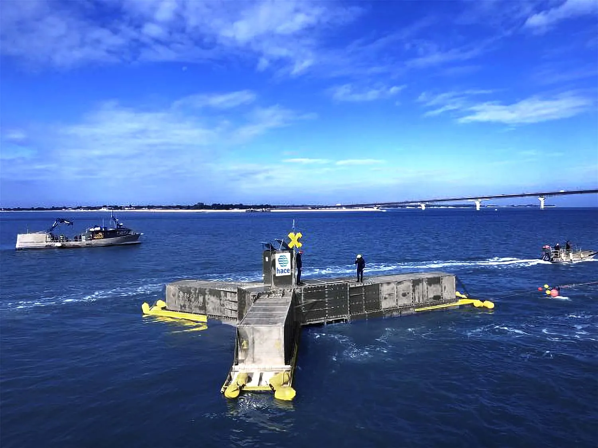
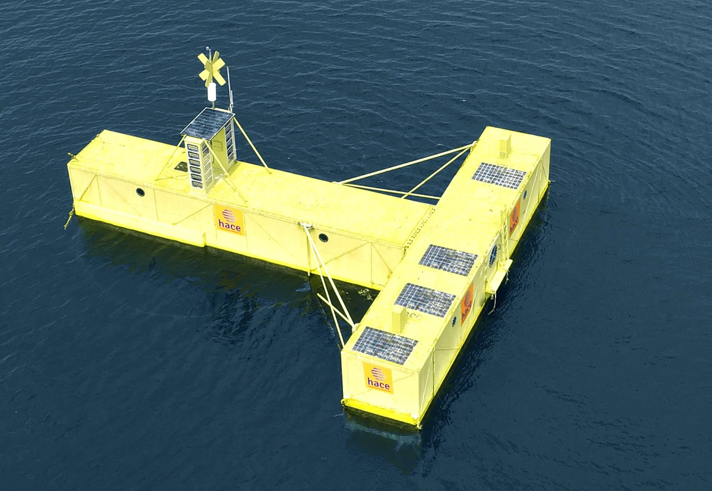
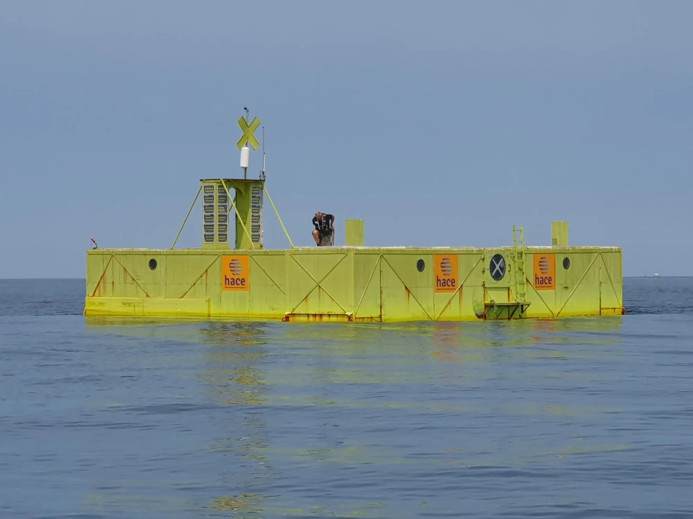
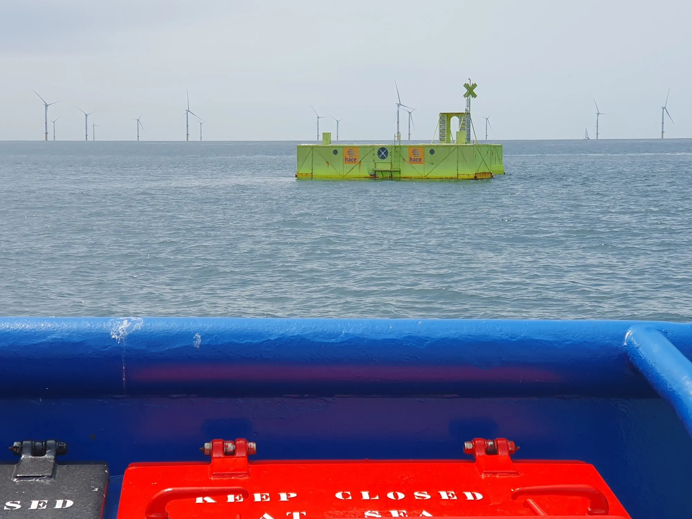

Dirancang berlebih
secara desain.
Skalabel. Kombinabel.
Integrable.
HACE dirancang untuk memberikan faktor kapasitas maksimum dalam semua kondisi — dan untuk beradaptasi dengan ambisi apa pun: dari modul tunggal hingga skala gigawatt, dari kegunaan gabungan hingga ekosistem paling kompleks.
Dirancang
berlebih secara desain.
Turbin HACE dirancang pada 1 MW nominal sementara sistem secara teoritis dapat menghasilkan 9 MW. Ini bukan batasan — ini adalah keputusan strategis yang disengaja.
Hasilnya: turbin terus beroperasi pada saturasi, apapun kondisi laut. Dengan gelombang 5 cm maupun cuaca buruk. Rasio inilah yang memberikan faktor kapasitas 50 hingga 90% — di mana angin lepas pantai mencapai puncak 30%.
* Estimasi dari model internal dan data IRENA. Faktor kapasitas akhir tergantung pada lokasi dan kondisi gelombang lokal.


→ beberapa GW
Teknologi yang sama.
Semua skala.
Skalabel
tanpa hambatan.
Satu modul. Satu teknologi. Satu proses manufaktur — di galangan kapal mana pun di dunia, tanpa peralatan berat.
Dari demonstrator ke pulau bergantung diesel, dari proyek pesisir ke susunan multi-GW: blok bangunan yang sama. Tanpa disrupsi teknologi. Tanpa risiko industri baru di setiap tahap. Mesin yang sama yang dikalikan.
tunggal
pesisir
regional
lepas pantai
Baja standar. 95% dapat didaur ulang. Dapat dibangun di galangan kapal mana pun. Tanpa komponen eksotis, tanpa logistik berat.
Kegunaan
bertumpuk.
Satu instalasi HACE dapat secara simultan menghasilkan listrik, melindungi garis pantai, mengalirkan daya ke elektroliser, dan mengamankan pelabuhan. Setiap kegunaan tambahan meningkatkan ROI keseluruhan tanpa biaya tambahan yang signifikan.
Ini adalah logika terbalik dari energi lain: di sini, semakin banyak digunakan, semakin menguntungkan.


Batu bata
dari ekosistem
yang lebih ambisius.
HACE bisa menjadi sumber energi dari sistem yang melampaui produksi listrik sederhana. Sinergi dengan pemain komplementer sudah ada — dan arsitektur paling ambisius masih akan dibangun.
ZESTAs — Transportasi maritim nol emisi
Aliansi global 50+ pemain. HACE sebagai pemasok energi "Absolute Zero" untuk pelabuhan dan kapal.
Aliansi terkonfirmasi · 2026SHZ + H2X — Rantai hidrogen lengkap
Penyimpanan 20× lebih ringan (SHZ) + solusi penggunaan (H2X). HACE akan memasok energi kontinu di awal rantai.
Kemitraan sedang berjalan · bersyaratJaringan hibrida — HACE + angin + surya
Produksi kontinu HACE mengompensasi intermitensi sumber lain. Komplementaritas alami yang dapat menghilangkan kebutuhan penyimpanan massal.
Potensi teridentifikasi · untuk dikembangkanPusat data + pendinginan pesisir
Infrastruktur digital pesisir besar dapat dialiri energi stabil HACE sambil menggunakan air laut untuk pendinginan.
Penggunaan berkembang · perlu distrukturkanSemakin ambisius proyek Anda,
semakin relevan HACE.
Investor, operator, otoritas lokal — mari bicara tentang proyek yang Anda pikirkan.